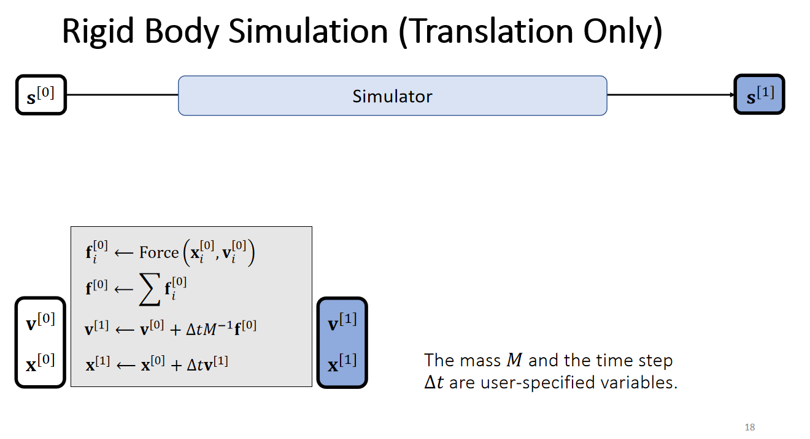
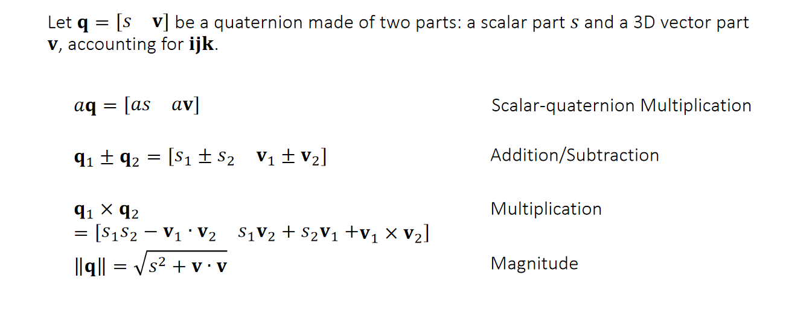
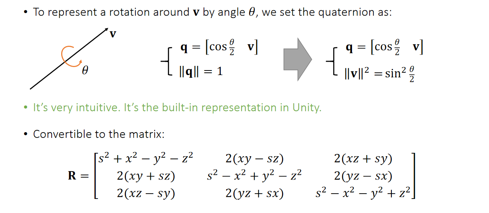
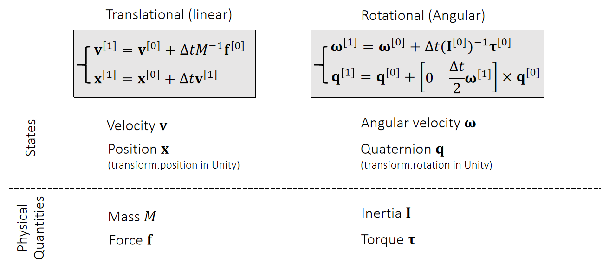
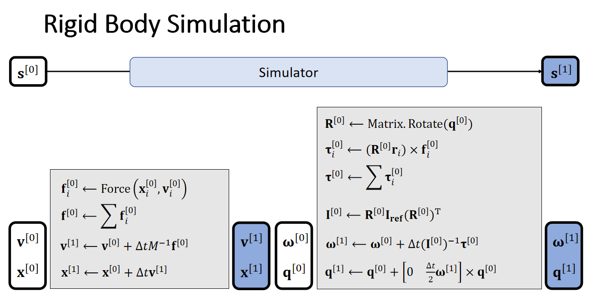
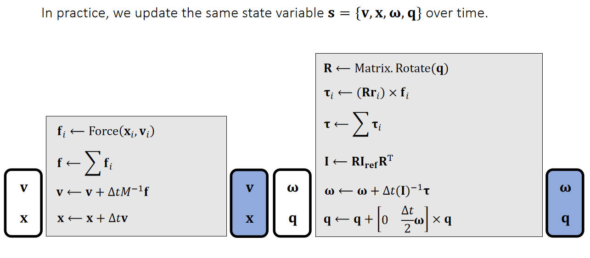
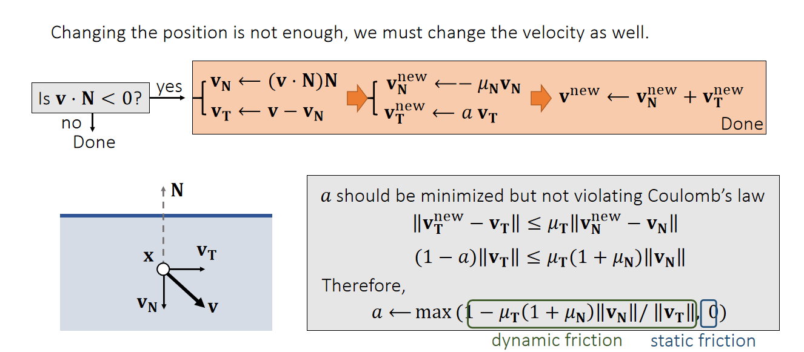
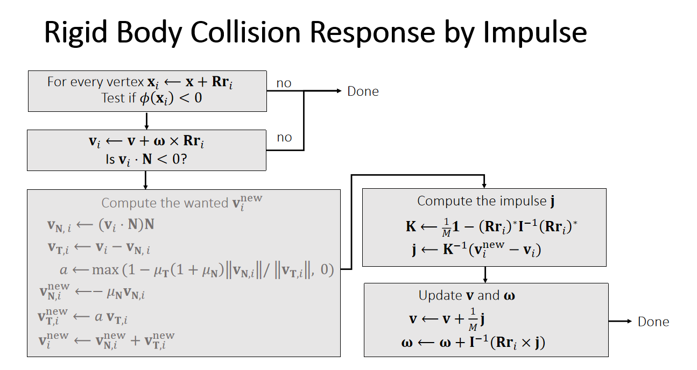
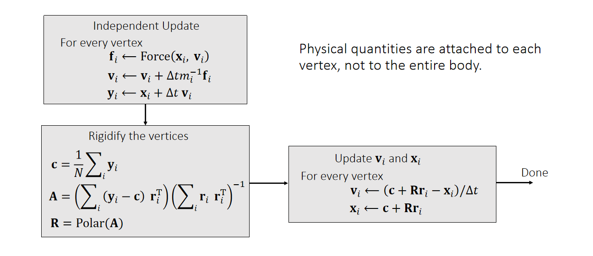

Rigid 刚体。
刚体不可变形，它的运动就可以看作两部分：平移和旋转。
# Rigid Motion
# Translation
前面说了一大堆误差啥的，没看懂。

需要给出：质量、力。计算得到：速度、位置。
# Rotation
使用矩阵表示旋转：方便计算但是不直观。
使用欧拉数表示：直观但是可能出现万向锁。
使用 Quaternion 四元数表示：一个数和一个三维向量组成，表示绕着这个向量旋转多少度。
四元数各种计算的定义：

具体表示：

需要给出：Inertia 惯量（对应质量）、Torque 力矩（对应力）。计算得到： 角速度（对应速度）、Quaternion 四元数（对应位置）。

# Simulation

上图就是更新的过程，实际计算的过程中用不着区分不同时刻的值，直接计算就好。

# Particle Collision Detection and Response 单点检测响应
# Penalty Methods
距离函数定义：一个点到一个物体表面的最近距离，如果在物体外就是正值，如果在物体内就是负值。
- 几个不同物体的距离函数的计算。
- 不同物体相交、相并之后的距离函数的计算。
Quadratic Penalty Methods: 碰撞（距离函数小于零）就给出一个倾向于远离的力，下一个时刻起作用。
- 原版：$\bf f = - \it k \phi (\bf x) N $ ，k 是一个系数，N 是距离函数的梯度，感觉也可以说是表面法向量的梯度。一定会发生穿模。
- 带缓冲：当距离函数小于一定值是就施加一个力。 。并不能完全避免穿模。
- Log-Barrier Penalty Method：假设距离函数永不为负。 。
# Impulse Methods
如果发生距离函数小于零的情况，则：把新的位置改变到最近的表面上。同时也要改变速度，如果法向速度和距离向量的梯度同向则不用管，如果反向则：把法向速度反向并乘一个系数 ，并且把切向速度也乘一个系数 。

（这里有关于 和 的关系讨论，没看懂）
# Rigid Collision Detection and Response by Impulse 刚体整体碰撞检测响应
一个刚体整体的碰撞检测和响应。我们用刚体质心的位置、速度、四元数、角速度表示整个刚体。
对一个刚体的坐标和四元数进行修改比较麻烦，修改速度和角速度比较简单，所以我们要尽量修改速度和角速度，在这里我们通过冲量进行这个修改。
检测：计算每个点的坐标，然后计算每个点的距离函数。
发生碰撞时，碰撞点的新速度可以通过单点检测响应的方法计算出来，并且我们已知这个点的速度改变量和冲量的关系：，其中 是可以通过计算得出的，那么我们就可以计算出来冲量 ，之后我们再让这个冲量作用在质心的速度和角速度上。

# Shape Matching
让每个点拥有自己的位置和速度，可以自己进行碰撞检测和响应，之后把这些点合成一个刚体。

- 方便计算，容易和点的模型结合
- 精度不好